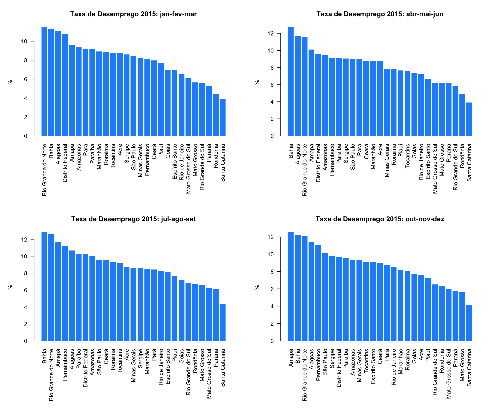
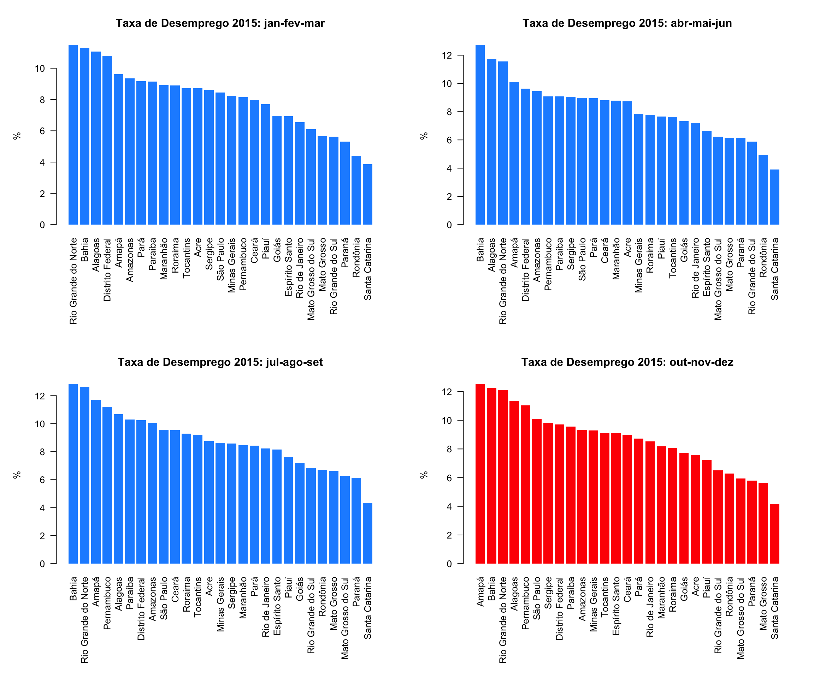

No último post, você aprendeu um pouco sobre os tipos de dados e como realizar algumas transformações. Neste post, trataremos um pouco sobre estruturas de controles (for, if, else, while etc.). Estruturas de controles serão bastante usadas durante o processo de análise de dados, sendo importante que você domine esse tópico.
Para exemplificar, utilizaremos os dados de taxas de desemprego que estão disponíveis neste link.
Antes de mais nada, carregue os dados:
desemprego.uf <- read.table("desemprego_uf_espaco.txt", sep = " ", dec = ",", stringsAsFactors = FALSE)Intuição sobre Loops
Trata-se de um dos conceitos mais importantes de qualquer linguagem de programação. Em R não é diferente. Loops (ou laços) repetem uma sequência de comando quantas vezes você desejar, ou até que uma condição aconteça, variando alguns aspectos entre uma repetição e outra.
Supondo que você queira testar uma simples expressão para 5 valores diferentes, por exemplo:
x <- 2
x + x*2 + x^2 + x^x
[1] 14
x <- 3
x + x*2 + x^2 + x^x
[1] 45
x <- 4
x + x*2 + x^2 + x^x
[1] 284
x <- 5
x + x*2 + x^2 + x^x
[1] 3165Repare que você executou 5 vezes o mesmo comando alterando apenas o valor da variável x. 5 ainda parece uma quantidade pequena, mas vamos supor que você gostaria de testar essa expressão para 1000 valores? Você a escreveria 1000 vezes? Apesar de você poder calcular todos esses valores a partir de um vetor x <- 2:5, em uma situação específica você pode ser ver obrigado a usar um loop pra não ter que ficar fazendo repetições cansativas.
for()
O for() é usado para realizar uma série de ordens para uma determinada sequência ou índices. Aplicando ao exemplo acima, temos a seguinte sintaxe:
for(x in 2:5) {
print(x + x*2 + x^2 + x^x)
}
[1] 14
[1] 45
[1] 284
[1] 3165Repare, você escreveu bem menos e o resultado foi idêntico: “para cada x igual a cada item na sequência 2:5, execute print(x + x*2 + x^2 + x^x)”. O for() irá repetir todas as instruções dentro das chaves { } para cada elemento da sua sequência (vetor).
Você também pode passar números que poderão ser usados como índices.
x <- c(1, 4, 5, 6, 10)
for(i in 1:5){
print(x[i])
}
[1] 1
[1] 4
[1] 5
[1] 6
[1] 10Vamos a um exemplo mais útil que deixa mais claro como o for() funciona. Suponha que você necessita gerar um único plot com quatro gráficos, um para cada trimestre de 2015, da taxa de desemprego por unidade da federação.
Para facilitar, iremos criar um novo data.frame em que estejam selecionadas somente as linhas em que a variável ano é igual a 2015:
desemprego.uf.2015 <- desemprego.uf[desemprego.uf$Ano == 2015,]Perceba que no código base do R, para selecionar as linhas de um data.frame, você utiliza o [ , ]. A vírgula divide as duas dimensões do data.frame. Assim, se o desejo é selecionar linhas, são utilizadas condições antes da vírgula. Para selecionar colunas, serão necessários códigos após a vírgula. Funciona de maneira similar a uma matriz.
No entanto, esta não é a única maneira de realizar esse filtro nos dados. Por exemplo, você poderia obter o mesmo resultado usando a função subset(). Dê uma olhadinha no help.
Além disso, iremos criar um vetor com os trimestres que serão usados como base para realização do loop.
# Selecionar valores únicos da coluna Trimestre
trimestre <- unique(desemprego.uf.2015$Trimestre)
trimestre
[1] jan-fev-mar abr-mai-jun jul-ago-set out-nov-dez
Levels: abr-mai-jun jan-fev-mar jul-ago-set out-nov-dezVamos treinar o for() exibindo todos os valores da variável trimestre.
for(i in trimestre){
print(i)
}
[1] "jan-fev-mar"
[1] "abr-mai-jun"
[1] "jul-ago-set"
[1] "out-nov-dez"Agora vamos definir alguns parâmetros do plot. Aqui usaremos o recurso base do R para geração dos gráficos. Atualmente, uma boa parte dos usuários (inclusive a gente) utiliza o ggplot2.
Com um pouco de criatividade e com uma boa base de dados, você poderá criar gráficos como o que está neste post do Airbnb. Não entraremos em detalhes sobre gráficos agora, mas prometemos uma sequência de posts ensinando todos os principais aspectos da confecção de gráficos, aguarde!
Os parâmetros do plot serão definidos usando a função par(). Utilize o ?par para ver mais detalhes sobre esta função e as opções disponíveis.
par(mfrow = c(2,2), # O plot terá 2 linhas e 2 colunas
mar = c(8, 5, 4, 2), # margens inferior, esquerda, superior, direita
las = 2) # rótulos perpendicular aos eixosO código abaixo traz o loop. Temos 4 operações dentro do loop:
- Criar o data.frame
dados.tmpa partir de um filtro no data.framedesemprego.uf.2015. Queremos somente as linhas em que o Trimestre é igual ai. - Usando a função
order(), ordenar as linhas dosdados.tmpde forma decrescente pelo valor da taxa de desemprego. Vide?order(). - Criar um objeto de texto que trará o título de cada gráfico. Usamos a função
paste()que tem o papel de concatenar o que for passado como argumento. Usamos espaço como separador, mas você pode passar qualquer separador entre as aspas. Esta função tem mais um parâmetro:collapse. Não precisaremos desse parâmetro aqui, mas dê uma olhada no help para ver alguns exemplos. Note também que ele já tem um valor padrãoNULL. - Por fim, usamos o
barplot()para criar o gráfico de barra. Vide?barplot().
for(i in trimestre){
dados.tmp <- desemprego.uf.2015[desemprego.uf.2015$Trimestre == i,
c('UF', 'Taxa_Desemprego')]
dados.tmp <- dados.tmp[order(dados.tmp$Taxa_Desemprego, decreasing = T),]
# Cria o título do plot
title <- paste("Taxa de Desemprego 2015:", i, sep = " ")
# Gera o gráfico de barras
barplot(dados.tmp$Taxa_Desemprego, names.arg = dados.tmp$UF,
col = "dodgerblue", border = NA, main = title,
ylab="%")
}Veja o resultado:

O gif abaixo mostra como o R vai inserindo gráfico a gráfico. Adicionei o comando Sys.sleep() para que a execução fosse suspensa durante 1,5 segundo para ficar mais claro a criação de cada gráfico e ter a sensação do loop criando um por um (na realidade isso acontece quase instantaneamente!).
if e else
Outro clássico conceito de programação que você usará muito é o if e else. É uma estrutura condicional, que usa os operadores lógicos apresentados no post anterior. Se a condição do if() for verdadeira, executa os comandos dentro das chaves { }, se for falsa, executa os comando da chave do else { }
Para exemplificar o uso do if e else, vamos continuar com o exemplo anterior, mas desta vez queremos que as barras para o trimestre out-nov-dez sejam vermelhas. Dessa forma, usaremos os controles if e else. A ideia é realizar um teste sobre i que assume um valor do vetor trimestre. Assim, se i for igual a out-nov-dez, a cor será ver vermelha (col = red), caso contrário utilizaremos o azul (col = dodgerblue).
par(mfrow = c(2,2), # O plot terá 2 linas e 2 colunas
mar = c(10, 5, 4, 2), # margens inferior, esquerda, superior, direita
las = 2) # rótulos perpendicular aos eixos
for(i in trimestre){
dados.tmp <- desemprego.uf.2015[desemprego.uf.2015$Trimestre == i,
c('UF', 'Taxa_Desemprego')]
dados.tmp <- dados.tmp[order(dados.tmp$Taxa_Desemprego, decreasing = T),]
title <- paste("Taxa de Desemprego 2015:", i, sep = " ")
if(i == 'out-nov-dez'){
barplot(dados.tmp$Taxa_Desemprego, names.arg = dados.tmp$UF,
col = "red", border = NA, main = title,
ylab="%")
}else{
barplot(dados.tmp$Taxa_Desemprego, names.arg = dados.tmp$UF,
col = "dodgerblue", border = NA, main = title,
ylab="%")
}
}
Podemos reescrever o código acima com o comando ifelse() e obter o mesmo resultado (veja ?ifelse()). Para isso, iremos usar o comando ifelse() no argumento col. O primeiro argumento dessa função é o teste que você deseja realizar (saber se o trimestre é ou não é igual a out-nov-dez), o segundo é o valor desejado caso seja verdade e o último é o valor a ser retornado caso a condição não seja satisfeita.
par(mfrow = c(2,2), # O plot terá 2 linas e 2 colunas
mar = c(10, 5, 4, 2), # margens inferior, esquerda, superior, direita
las = 2) # rótulos perpendicular aos eixos
for(i in trimestre){
dados.tmp <- desemprego.uf.2015[desemprego.uf.2015$Trimestre == i,
c('UF', 'Taxa_Desemprego')]
dados.tmp <- dados.tmp[order(dados.tmp$Taxa_Desemprego, decreasing = T),]
title <- paste("Taxa de Desemprego 2015:", i, sep = " ")
barplot(dados.tmp$Taxa_Desemprego, names.arg = dados.tmp$UF,
col = ifelse(i == 'out-nov-dez', 'red', 'dodgerblue'),
border = NA, main = title,
ylab="%")
}
O ifelse() tem uma característica importante. Enquanto o if() aceita apenas um único teste (comprimento um), o ifelse pode receber um vetor para testes e aplicar as condições para este conjunto de teste. Para ficar mais claro veja o exemplo abaixo.
desemprego.uf.2015$Maior.que.9 <- ifelse(desemprego.uf.2015$Taxa_Desemprego > 9,
"Maior que 9",
"Menor ou igual a 9")
head(desemprego.uf.2015, 10)
Ano Trimestre UF Taxa_Desemprego Maior.que.9
13 2015 jan-fev-mar Rondônia 4.396 Menor ou igual a 9
14 2015 abr-mai-jun Rondônia 4.919 Menor ou igual a 9
15 2015 jul-ago-set Rondônia 6.679 Menor ou igual a 9
16 2015 out-nov-dez Rondônia 6.276 Menor ou igual a 9
29 2015 jan-fev-mar Acre 8.722 Menor ou igual a 9
30 2015 abr-mai-jun Acre 8.723 Menor ou igual a 9
31 2015 jul-ago-set Acre 8.759 Menor ou igual a 9
32 2015 out-nov-dez Acre 7.588 Menor ou igual a 9
45 2015 jan-fev-mar Amazonas 9.358 Maior que 9
46 2015 abr-mai-jun Amazonas 9.457 Maior que 9while, repeat, break, next
Além do for(), temos também outras estruturas de loop que funcionam de maneira semelhante, mudando somente a condição para execução das repetições.
O while() é uma estrutura de controle utilizada para realizar um loop enquanto uma condição for satisfeita. Aqui realizaremos um loop simples somente para demonstrar o funcionamento do while(). Será criado um objeto i igual a 1 e iremos mostrá-lo no console enquanto for menor ou igual a 5. A cada iteração será adicionado 1 ao valor de i.
i <- 1
while(i <= 5){
print(i)
i <- i + 1
}
[1] 1
[1] 2
[1] 3
[1] 4
[1] 5Como você notou no exemplo do if e else, o R permite que um loop seja elaborado com várias estruturas de controle. Usaremos isto para exemplificar o funcionamento do repeat e do break.
O repeat realiza as operações que estão entre { } indefinidamente. Obviamente, não iremos querer executar nada para sempre, iremos querer que o loop termine caso alguma coisa aconteça. Dessa forma, temos que criar uma condição para que ele pare e uma instrução dizendo que o loop deve terminar caso a condição seja satisfeita.
No exemplo abaixo, iremos novamente incrementar o objeto i, mas queremos que estas operações parem se ele superar 6, ou seja, no meio da execução vamos verificar se a condição de parada acontece. Veja o código abaixo:
i <- 1
repeat{
print(i)
i <- i + 1
if(i > 6){
break # Se a condição é satisfeita, encerra o loop.
}
}
[1] 1
[1] 2
[1] 3
[1] 4
[1] 5
[1] 6Por fim, o next é usado para pular para a próxima iteração caso uma determinada condição seja satisfeita. É muito usado quando você quer ignorar certas repetições, por exemplo:
for(i in 1:10){
if(i > 2 & i <= 4) next
print(i)
}
[1] 1
[1] 2
[1] 5
[1] 6
[1] 7
[1] 8
[1] 9
[1] 10Perceba que não há necessidade das { } se a operação a ser executada em um estrutura de controle estiver na mesma linha. Você também poderia usar normalmente o { }.
Algumas observações
Muitas operações que usam loops podem ser realizadas a partir de outros comandos de maneira mais rápida (família apply(), por exemplo). Os loops no R são conhecidos por serem lentos e dependendo do seu problema eles se tornam inviáveis. No entanto, existem algumas práticas que tornam os loops mais rápidos. Não iremos tratar disso por agora, mas aqueles que tiverem mais curiosidade podem encontrar mais informações aqui.
Desafio
Fugindo um pouco dos exemplos dos gráficos, vamos lançar um desafio em relação ao método de Newton-Raphson para que seja encontrada a raiz de uma determinada função. O método consiste em um processo iterativo em que a cada período o valor da variável é atualizado de acordo com uma fórmula e há convergência quando o valor absoluto da função para aquele determinado é inferior a um nível de tolerância.
O objetivo é encontrar a raiz da função: \[ f(x) = x^3 - 2x - 6 \]
Partindo de um valor inicial, o processo de iteração é o seguinte:
\[x_{n+1} = x_n - \frac{f(x_n)}{f'(x_n)} = x_n - \frac{x_n^3 - 2x_n - 6}{3x_n^2 - 2}\]
Use como critério de parada se \(\|f(x_n)\| < 0.000001\) e como valor inicial \(x_0 = -10\).
Referências
- How to write the first for loop in R
- For loops (and how to avoid them)
- Speed up the loop operation in R
Demais posts da sequência:
- Kit de sobrevivência em R - Parte 1: Visão Geral e Instalação
- Kit de sobrevivência em R - Parte 2: Operações, Variáveis e Funções
- Kit de sobrevivência em R - Parte 3: Pacotes
- Kit de sobrevivência em R - Parte 4: Carregando Dados
- Kit de sobrevivência em R - Parte 5: Tipos de Dados e Transformações
- Kit de sobrevivência em R - Parte 6: Estruturas de Controle
- Kit de sobrevivência em R - Parte 7: Avançando e Aprofundando